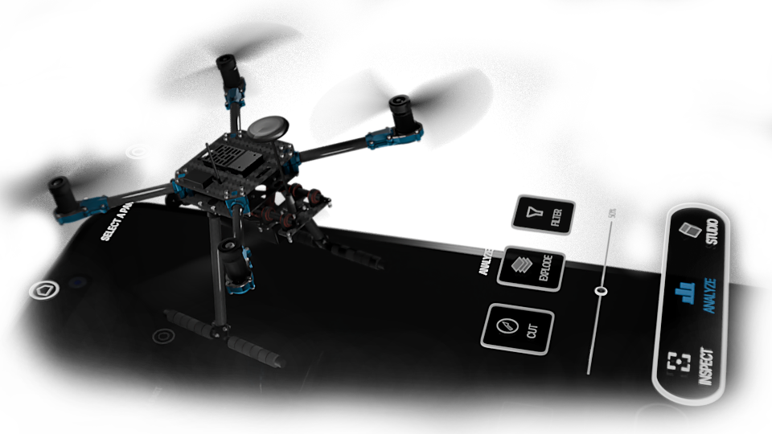
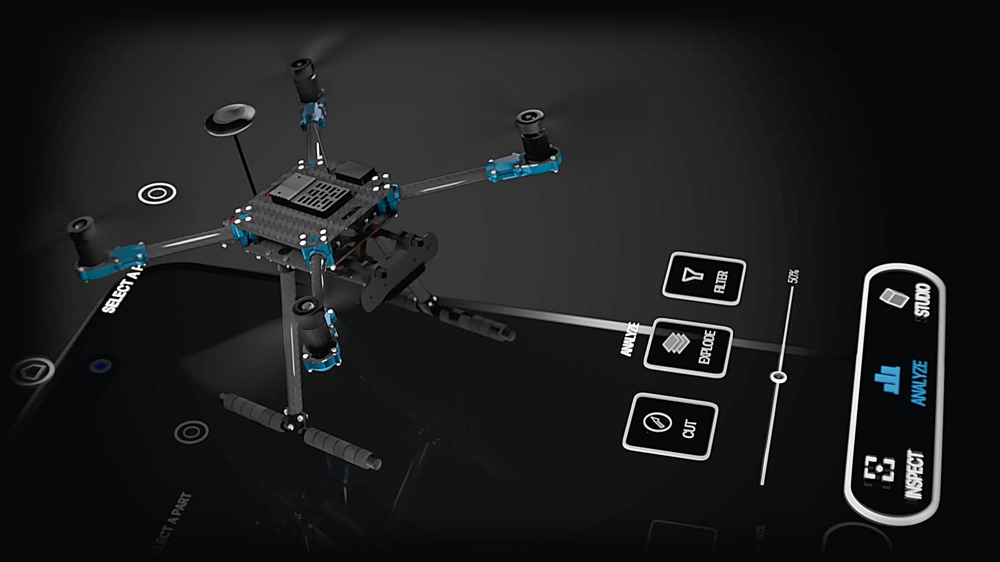
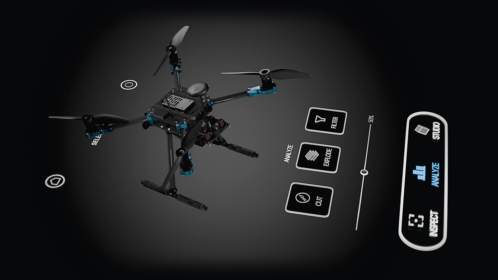
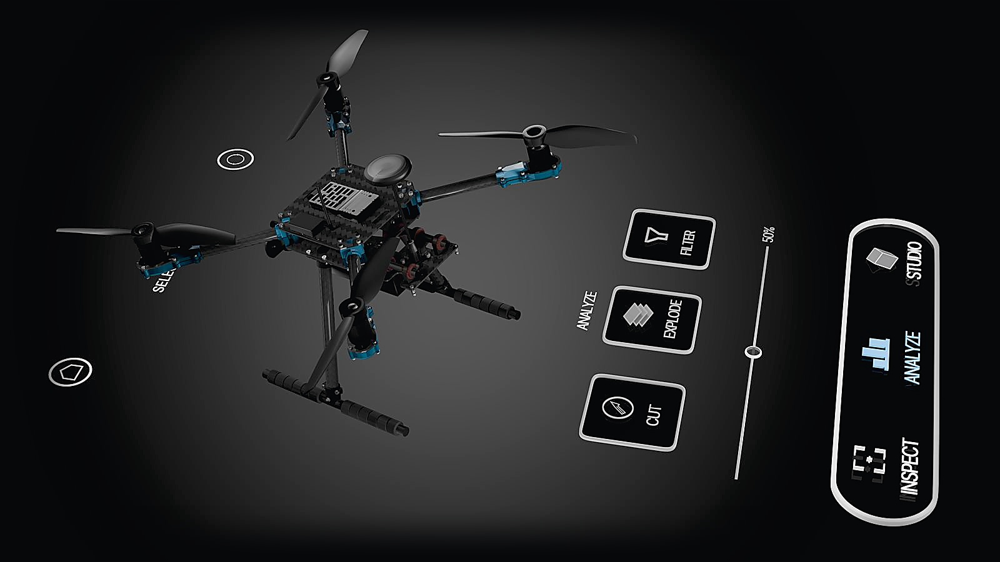
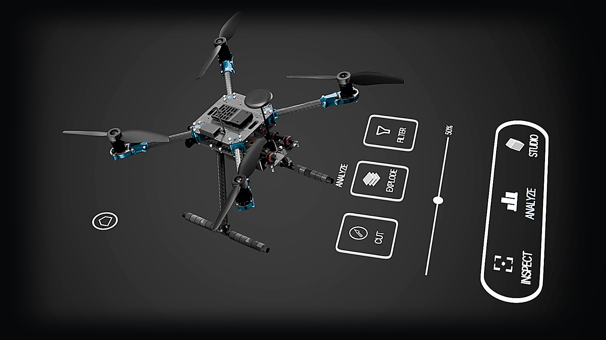
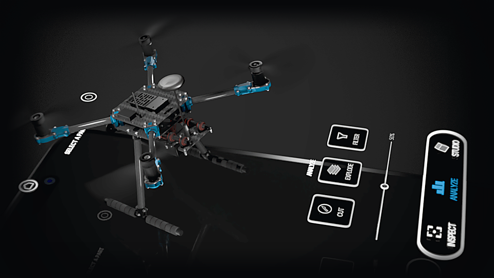

00Defensa de grado — Ingeniería Multimedia
TwinSight X500
Convierte un ensamblaje complejo en una experiencia WebGL inspeccionable.
El aporte no es replicar el estado operacional del dron: es volver legibles sus piezas, relaciones y modos de lectura visual desde el navegador.
- Autor
- Alexander Woodcock Salomón
- Proyecto
- TwinSight X500
- Institución
- Universidad Nacional Abierta y a Distancia (UNAD)
- Caso de estudio
- Holybro X500 V2
- Artefacto
- Prototipo Unity WebGL para visualización e inspección técnica
- Demo
- twinsight.alexwoodcock.me

01Problema
El reto central es comprender relaciones, no solo ver piezas.
Documentación
Planos, manuales y referencias técnicas contienen información útil, pero la lectura está distribuida en soportes separados.
Fricción
El usuario debe reconstruir mentalmente profundidad, ubicación y ensamblaje a partir de vistas planas y desarticuladas.
Respuesta
Una capa 3D web permite ubicar, seleccionar, aislar y relacionar piezas sin abrir herramientas CAD pesadas.
El problema no es ausencia de datos: es la distancia entre los datos disponibles y la comprensión espacial operativa.
02Marco teórico I
La carga cognitiva explica por qué la forma de presentar importa.
Complejidad propia del contenido. Un dron multicomponente es complejo aunque la interfaz sea óptima.
Cómo se presenta la información. Saltar entre planos, tablas y vistas no conectadas aumenta el esfuerzo innecesario.
Esfuerzo útil que construye esquemas: entender función, ubicación y relación de una pieza con el ensamblaje.
Esta tesis no mide las tres cargas directamente. Las usa como marco teórico para justificar una interfaz 3D guiada que reduce la reconstrucción espacial innecesaria.
03Marco teórico II
La interfaz traduce la teoría en jerarquía, agrupación, estado y reconocimiento.
| Principio (informe) | En la app | En este deck |
|---|---|---|
| Jerarquía visual · Norman | Hero, barra inferior de modos y ficha inferior separan navegación, acción y detalle. | Una afirmación por slide; el título es la tesis. |
| Agrupación · Gestalt | Controles agrupados por modo; categorías cromáticas por subsistema. | Lima = evidencia · ámbar = límite declarado. |
| Visibilidad del estado · Nielsen | Contorno de selección, modo activo resaltado, leyenda de Thermal. | Revelado por pasos y contador de slide. |
| Reconocimiento antes que memoria · Nielsen | Hotspots, fichas por pieza y onboarding procedural. | Cada término se define antes de usarlo. |
04Alcance
La tesis responde con un visual product twin, no con un digital twin operacional.
Visual Product Twin
Alcance- Visualización 3D WebGL navegable en tiempo real.
- Selección, aislamiento e inspección de componentes técnicos.
- Modos de representación visual y lectura contextual.
- Taxonomía estructural del dron Holybro X500 V2.
- Profiler integrado para trazabilidad de rendimiento.
- Evaluación formativa descriptiva con usuarios reales.
Digital Twin Operacional
Exclusiones- Telemetría en tiempo real desde el dron físico.
- Sincronización de variables de estado operacional activo.
- Simulación FEA calibrada o solvers estructurales en runtime.
- Integración con sistemas PLM, CMMS, SCADA o redes IoT.
- Mantenimiento predictivo o análisis de fatiga.
- Diagnóstico y control del hardware físico desde la web.
05Objetivos
Los objetivos definen el contrato: construir y evaluar un artefacto interactivo.
Pipeline de optimización CAD
Diseñar un pipeline 3D que reduzca modelos CAD a presupuesto WebGL (6,5M a 95 617 tri), preservando legibilidad formal y piezas.
Materiales, modos y rendimiento
Integrar en Unity URP renderizado realista y herramientas de inspección, procurando frame time ≤ 33,33 ms (≥ 30 FPS).
Prototipo interactivo WebGL
Implementar la app web en Unity (C# / WebAssembly) con órbita, selección, bottom sheet, vista explosionada, corte y modos analíticos.
Evaluación con usuarios
Evaluar formativamente tareas y carga percibida (3D vs. 2D con NASA-TLX Raw y Think-Aloud), y estimar usabilidad global con SUS.
06Metodología
La metodología usa DSR con validación formativa descriptiva.
Marco DSR (Peffers / Hevner)
Producción de conocimiento mediante diseño, construcción y evaluación rigurosa de un artefacto interactivo que resuelve una brecha técnica real.
Formativa y descriptiva
Formativa para aprender del prototipo y refinar la interacción. Descriptiva para reportar patrones observados con honestidad, sin inferencia poblacional.
07Evaluación
Ninguna métrica mide todo: la evaluación triangula cinco capas de evidencia.
Evidencia integrada
- Datos técnicos — FPS, frame time y memoria del profiler interno.
- Usabilidad percibida — escala estandarizada SUS (solo 3D).
- Métricas de tarea — tiempos T1–T3 y completitud T1–T4.
- Protocolo cualitativo — codificación de categorías Think-Aloud.
- Carga de trabajo — índice multidimensional NASA-TLX Raw (3D vs 2D).
08Pipeline
De 6,5 millones a 95 617 triángulos: la traducción de activos CAD para WebGL.
Por qué optimizar
El CAD original no estaba listo para render en tiempo real: mallas complejas con caras internas ocultas, tornillería duplicada y redundancias topológicas.
Qué se conserva
La optimización mantiene la estructura jerárquica para selección y desglose interactivo, preservando silueta y lectura funcional.
No se simplifica por simplificar: se preserva la coherencia para inspección técnica en web.
09Activo 3D
La escena runtime exportada es explorable: rota, acerca y alterna la lectura técnica.

GLB · cargando…- Geometría real de la build: x500v2_runtime_low — 252 mallas, ~229 000 triángulos.
- Normal maps bake del pipeline; lectura técnica con modo wireframe.
- Jerarquía de piezas preservada para selección y desglose interactivo.
- Visor de respaldo en three.js + GLTF — independiente de Unity.
Esto es la escena runtime instanciada, no el activo base: por eso su conteo (~229 000) difiere de los 95 617 triángulos del activo optimizado (ver Geometría y B6).
10Geometría
La reducción geométrica se lee como presupuesto de activo, no como conteo runtime.
Triángulos del activo
Modelo base optimizado exportado del pipeline: retopología y bake de mapas.
- Mide el activo base y sus masters principales.
- Trazabilidad directa desde las piezas CAD originales.
Triángulos estimados en ejecución
Conteo del profiler interno sobre la escena instrumentada en las pruebas.
- Incluye instancias, proxies, assets de apoyo y renderers adicionales.
- 252 renderers activos en la escena medida.
Las cifras no son equivalentes ni se contradicen: una mide el costo del activo; la otra, la complejidad de la escena en ejecución.
11Arquitectura
La arquitectura separa UI, orquestación, servicios de escena y datos.
12Taxonomía
La taxonomía permite seleccionar piezas madre, subpiezas, hotspots y fasteners.
Entidades semánticas principales con asset DronePartData.
28 piezas base más grupos técnicos de fasteners y misceláneos.
Elementos de malla y colisionadores auditados en runtime.
Señalización
Puntos de anclaje para dirigir la exploración a zonas relevantes del ensamblaje.
Ensamblaje
Elementos de sujeción tratados como parte de una relación de ensamblaje, no como ruido aislado.
Lectura contextual
Traduce selección geométrica a ficha técnica comprensible para inspección.

13Flujo público
El flujo de usuario revela la complejidad del dron de forma progresiva.
Revelado por etapas
El flujo reparte la complejidad en etapas lógicas, revelando opciones analíticas solo después de interactuar con el dron en Explore.
Ruido excluido
Se excluyeron intencionalmente paneles de depuración y mediciones internas del recorrido básico para evitar el desborde cognitivo.

14Inspect · Analyze
Inspect y Analyze eliminan el ruido visual para hacer legible el ensamblaje.
- Aísla la pieza seleccionada y conserva contexto mínimo útil.
- Convierte una selección de malla en una lectura técnica contextual.
- Responde: ¿qué pieza es y dónde está ubicada?
- Exploded view y corte transversal hacen visibles relaciones internas.
- Los filtros por categoría reducen ruido material y jerárquico.
- Responde: ¿cómo se conecta con las demás piezas?
15Studio
Los shaders son herramientas de inspección técnica, no filtros estéticos.
Orientación
Lectura general del ensamblaje completo.
Lectura interna
Visibilidad de componentes internos ocultos.
Relación geométrica
Color plano y contorno para leer forma y silueta.
Interés relativo
Jerarquías de atención visual por componente.
- Cada modo responde una pregunta distinta sobre el mismo ensamblaje.
- Los shaders no son un adorno; son una estrategia de lectura técnica.
16Thermal
Thermal es una visualización heurística, no una simulación FEA calibrada.
- Comunica jerarquías relativas de interés visual entre componentes.
- No usa sensores, telemetría ni datos térmicos físicos del dron.
- Su función es exploratoria y comunicativa, no diagnóstica.
- La leyenda en °C es la escala del modelo heurístico por componentes, no una medición.
17Demo
La demo debe probar tres capacidades, no navegar improvisadamente.
Selección
Pasar del dron completo a una pieza concreta con su ficha contextual.
Relación
Mantener contexto entre pieza y ensamblaje sin perder legibilidad.
Modo visual
Cambiar la lectura del modelo sin cambiar el alcance del sistema.
Selección → Aislamiento → Bottom sheet → Inspect → Analyze → Studio

18Demo
Demo: de dron completo a pieza, relación y modo visual.
- 0:00 · Selección de pieza → aislamiento → ficha en bottom sheet.
- 0:17 · Inspect: energía / carga del dron (Starting · Idle · Flying).
- 0:34 · Analyze: vista explosionada y corte transversal.
- 1:08 · Studio: X-Ray → Thermal → Solid.
La demo se hace en vivo en la build pública. Si no responde, se narra este video del mismo recorrido.
19Profiler
El profiler interno vuelve trazable el rendimiento por escenario y dispositivo.
- Cada medición se vincula a build, dispositivo, navegador, resolución y condición de caché.
- La trazabilidad permite comparar escenarios sin inventar equivalencias técnicas.
- El profiler exporta datos verificables en formatos abiertos JSON / CSV.
"scenario": "thermal_studio", "deviceModel": "Chrome 141.0.0.0", "averageFps": 59.8, "averageFrameMs": 16.7, "peakReservedMemoryMb": 413, "rendererCount": 252, "estimatedTriangleCount": 229054
20Rendimiento
El rendimiento es viable, pero no universal en todo móvil.
Estable
≈16,7–17 ms por cuadro (~60 FPS), muy por debajo del presupuesto de 33,33 ms (30 FPS).
Funcional, bajo la meta
Redmi Note 10S: 26,5 FPS. Funcional en el flujo principal, con picos perceptibles.
Límite operativo
Android Adreno 610: 17,6 FPS. Navegable, pero por debajo de la meta de 30 FPS.
La compatibilidad está acotada a los entornos documentados, sin promesas de uniformidad universal en móvil.
21Usabilidad
SUS de 91,88: recepción favorable del visor interactivo 3D.
Usabilidad
Mediana 95,00 · DE 11,24 (n=12)
Dispersión
Mínimo 60 · máximo 100 en los 12 participantes
Media histórica
Punto de comparación contextual, no umbral de aprobación
SUS se aplicó solo al prototipo 3D: describe una usabilidad percibida favorable en esta muestra, no una comparación 3D frente a 2D.
22NASA-TLX Raw
En la muestra, el visor 3D se asoció con menor carga de trabajo percibida.
3D Raw
2D Raw
- Diferencia pareada media: 11,19 puntos a favor del visor 3D.
- El valor fue menor en la condición 3D en los 12 casos individuales evaluados.
T4: exploratoria guiada, no cronometrada. NASA-TLX Raw mide carga de trabajo percibida (workload) — no equivale a una medición fisiológica directa de carga cognitiva.
| Tarea | 3D | 2D |
|---|---|---|
| T1 · Ubicación / Identificación | 5,75 s | 13,00 s |
| T2 · Interpretación funcional | 3,50 s | 18,00 s |
| T3 · Relación espacial | 11,33 s | 23,00 s |
| Total T1–T3 | 20,58 s | 54,00 s |
23Validación cualitativa
Think-Aloud explica comprensión espacial y fricciones residuales.
Lima: apoyo a la comprensión · ámbar: fricciones (Tabla 27 del informe).
- Comprensión espacial (11/12): relación motor, montura, tornillería y conjunto.
- Percepción de claridad (8/12): explode, Thermal, X-Ray, Blueprint y aislamiento.
- Navegación y control (10/12): órbita, pan y sensibilidad táctil en móvil.
- Iconos procedurales (6/12): estados o lectura poco evidentes.
- Selección de piezas pequeñas o parcialmente ocultas (2/12).
Rigor académico: identificar fricciones residuales orienta el trabajo futuro y refuerza la transparencia de la evaluación formativa.
24Discusión
La discusión acota el resultado: efecto techo, muestra pequeña y compatibilidad limitada.
Lo que sí soporta
Evidencia- Menor tiempo medio en T1–T3 para la condición 3D.
- Menor workload percibido con NASA-TLX Raw.
- Recepción favorable del prototipo 3D con SUS alto (91,88).
- Mejor orientación espacial en verbalizaciones cualitativas.
Lo que no debe afirmarse
Límite- Generalización poblacional o causalidad fuerte.
- Compatibilidad móvil universal.
- Thermal como simulación física o FEA.
- Superioridad absoluta en éxito (efecto techo 12/12).
25Conclusiones
Las conclusiones cierran cada objetivo con evidencia trazable.
| Objetivo | Resultado operativo | Evidencia en el entorno |
|---|---|---|
| OE1 · Pipeline 3D | Optimización de mallas CAD: de 6,5M a 95 617 triángulos en activo base. | Filtros, retopología y bake documentados. Diagramas de flujo. |
| OE2 · Materiales / modos | URP Shaders con frame time <33,33 ms en desktop; en móvil funcional, no universal. 5 modos visuales. | Build estable en entornos probados. Presets y shaders en escena. |
| OE3 · Prototipo | Visor web 3D público y funcional con fichas de datos, Inspect, Analyze, Studio y Thermal. | Build WebGL pública funcional, URL de acceso y capturas de flujo. |
| OE4 · Evaluación | SUS medio 91,88, NASA-TLX 8,69 (3D) vs. 19,89 (2D), tiempos consistentemente menores. | Tareas cronometradas (20,58 s vs 54 s), SUS, NASA y Think-Aloud. |
26Limitaciones
Las limitaciones son alcance declarado, no fallas ocultas.
La arquitectura está preparada para generalizarse, pero la compatibilidad con otros drones no se ha validado.
Suficiente para validación formativa y descriptiva, pero insuficiente para inferencia estadística poblacional.
El diseño es mobile-first; la versión de escritorio es una adaptación funcional, no una UI nativa optimizada.
Se omitió el cableado interno flexible y conectores menores por restricciones de tiempo y complejidad geométrica.
Declarar los límites del prototipo define con precisión el espacio de validez de las afirmaciones del proyecto.
27Trabajo futuro
El trabajo futuro es una ruta de madurez, no una lista de deseos.
- Validación con muestra cercana a 30 y mejoras de interacción móvil.
- Twin manifest por componente (independiente de Unity).
- Telemetría histórica: digital shadow de reproducción.
- Live digital shadow (MQTT, REST, MAVLink, WoT).
- Modo servicio y mantenimiento guiado.
- Digital twin operacional con modelos calibrados.
28Contribución
La contribución es técnica, metodológica y comunicativa.
- Pipeline CAD → WebGL documentado.
- Taxonomía operativa para selección y lectura.
- Modos visuales y profiler integrados.
- DSR aplicado a un artefacto real.
- Triangulación de KPIs, tareas e instrumentos UX.
- Comparación intra-sujeto 3D vs 2D con orden AB/BA.
- Hardware complejo vuelto legible desde la web.
- Relaciones espaciales accesibles sin CAD pesado.
- Base útil para trabajo futuro más ambicioso.
29Fin de la transmisión
Gracias.
De la complejidad física a la legibilidad interactiva — una arquitectura WebGL trazable para la inspección técnica de ensamblajes complejos.
B1Backup — SUS
Fórmula e interpretación de SUS.
SUS = (Σ contribuciones por ítem) × 2,5
Ítems impares: (X − 1) · Ítems pares: (5 − X)
Aplicación
Aplicado exclusivamente al prototipo 3D, no como comparación 3D vs 2D.
Resultados
Media: 91,88 · Mediana: 95,00 · DE: 11,24 · Mín: 60 · Máx: 100.
Referencia
Bangor et al.: media histórica ~68. No es umbral absoluto de aprobación sino marco contextual.
B2Backup — NASA-TLX Raw
Fórmula y dimensión rendimiento invertido.
NASA-TLX Raw = (DM + DF + DT + E + FR + RE) / 6
RE (rendimiento): 0 = desempeño perfecto · 100 = deficiente
Resultados
Promedio 3D: 8,69 · Promedio 2D: 19,89 · Diferencia pareada media: 11,19 puntos.
Consistencia
El valor fue menor en la condición 3D en los 12 casos individuales evaluados.
Interpretación
Raw evita ponderación pareada — lectura formativa rápida. No existe redline universal (Hart 2006).
B3Backup — Diseño comparativo
Variables de control y orden AB/BA.
Muestra
12 participantes · muestra no probabilística intencional · mayo–junio 2026.
Balanceo
Códigos impares → AB (3D primero). Códigos pares → BA (2D primero).
Variables de control
Código anónimo, perfil agregado, experiencia, orden, dispositivo, SO, navegador, resolución, build, caché.
Condición 2D
Paquete documental fijo con información equivalente en planos y manuales.
T4
Exploratoria guiada, no cronometrada — sin cierre temporal comparable.
B4Backup — Rendimiento WebGL
Rendimiento por dispositivo y escenario.
| Dispositivo | FPS promedio | Frame time (ms) | Notas |
|---|---|---|---|
| Escritorio (i7-5820K / GTX 980 Ti) | 59.8 | 16.7 | Chrome 141 · caché cargada |
| Redmi Note 10S (Mali-G76) | 26.5 | 40.3 | MIUI Global 14.0.11 · Chrome 148 |
| iPhone 17 Pro (A19 Pro) | 58.7 | 17.0 | iOS · Safari |
| Android límite inferior (Adreno 610) | 17.6 | 61.4 | Android 12 · Chrome 114 · bajo 30 FPS |
Todas las mediciones con caché cargada. Compatibilidad declarada por caso, no universal.
B5Backup — Profiler
Profiler interno: JSON / CSV por escenario.
Exportación
El profiler exporta datos por escenario: FPS, frame time, memoria, draw calls.
Reproducibilidad
Reproducible bajo condiciones declaradas: build, dispositivo, navegador, resolución, caché.
Alcance
No implica mismo FPS en todo equipo — la reproducibilidad es del protocolo de medición, no del valor absoluto.
Ruta
Telemetria/Mediciones_WebGL/
B6Backup — 95 617 vs 229 054
Las dos cifras no son equivalentes.
Triángulos del activo
Mide el modelo base y sus masters principales después del pipeline de optimización geométrica.
Triángulos en ejecución
Estimado por el profiler: instancias + proxies + assets de apoyo + renderers adicionales (252 renderers).
No decir "se redujo de 229 054 a 95 617" — ambas cifras miden niveles distintos de la arquitectura.
B7Backup — Arquitectura
Capas de la arquitectura TwinSight.
B8Backup — Thermal
Thermal: heurístico relativo, no FEA.
Lo que hace
Sí- Comunica zonas de interés relativas por componente.
- Usa jerarquías de interpretación dentro del prototipo.
- Permite lectura visual exploratoria diferencial.
Lo que no hace
No- No recibe sensores ni telemetría.
- No calcula temperatura real.
- No ejecuta FEA ni solver físico.
- No diagnostica fallas térmicas.
B9Backup — Límites metodológicos
Límites declarados de la tesis.
- n = 12 · muestra no probabilística · sin inferencia poblacional.
- T4 exploratoria no cronometrada.
- SUS aplicado exclusivamente al prototipo 3D.
- Efecto techo en completitud (12/12 en ambas condiciones).
- Sin pretest/postest — no mide aprendizaje longitudinal.
- Thermal heurístico, no simulación FEA calibrada.
- Compatibilidad móvil acotada por dispositivo probado.
- Desktop como adaptación funcional, no UI nativa de escritorio.
- Sin telemetría real ni sincronización con dron físico.
- Mediciones con caché cargada — no evalúa primera carga fría.
B10Backup — Trabajo futuro
Fases futuras por prioridad.
- Muestra cercana a 30 y nuevos dispositivos.
- Navegación móvil, iconos y selección de piezas pequeñas.
- Twin manifest JSON por pieza, independiente de Unity.
- Telemetry playback CSV/JSON por pieza.
- Live digital shadow con frecuencia definida.
- Control de rendimiento WebGL con datos en vivo.
- Modo servicio: síntomas, checklists y reportes.
- Modelos calibrados y simulación what-if.
- Digital twin operacional con decisión human-in-the-loop.
B11Backup — Mobile UX
Las microinteracciones móviles responden a los límites de pantalla táctil y rendimiento.
Gestos
Tap para seleccionar, doble toque para aislar sin abrir el panel, pinch para zoom y arrastre vertical de la ficha.
Bottom sheet
El panel bloquea su área táctil para no mover el dron por accidente; zoom y órbita con sensibilidad reducida.
Móvil real
Redmi Note 10S de las pruebas: 26,5 FPS, funcional en el flujo principal con picos perceptibles.
